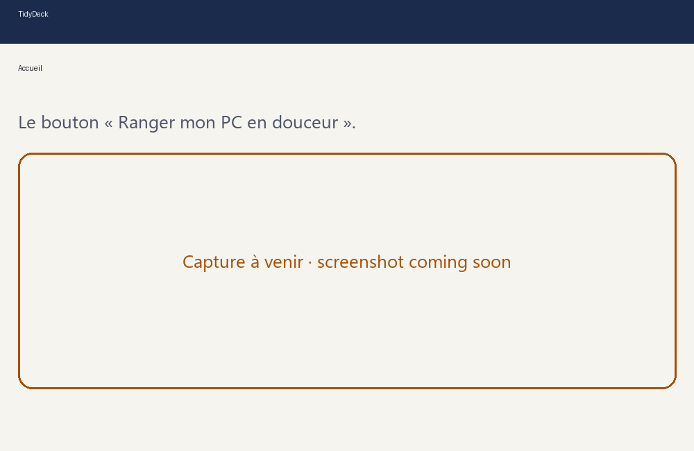
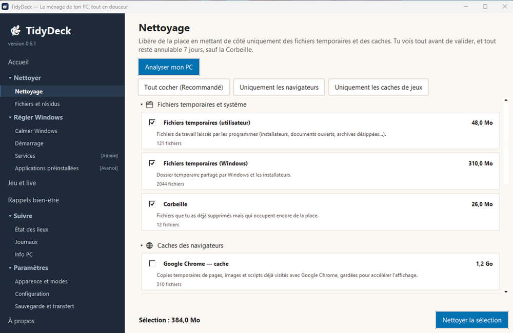
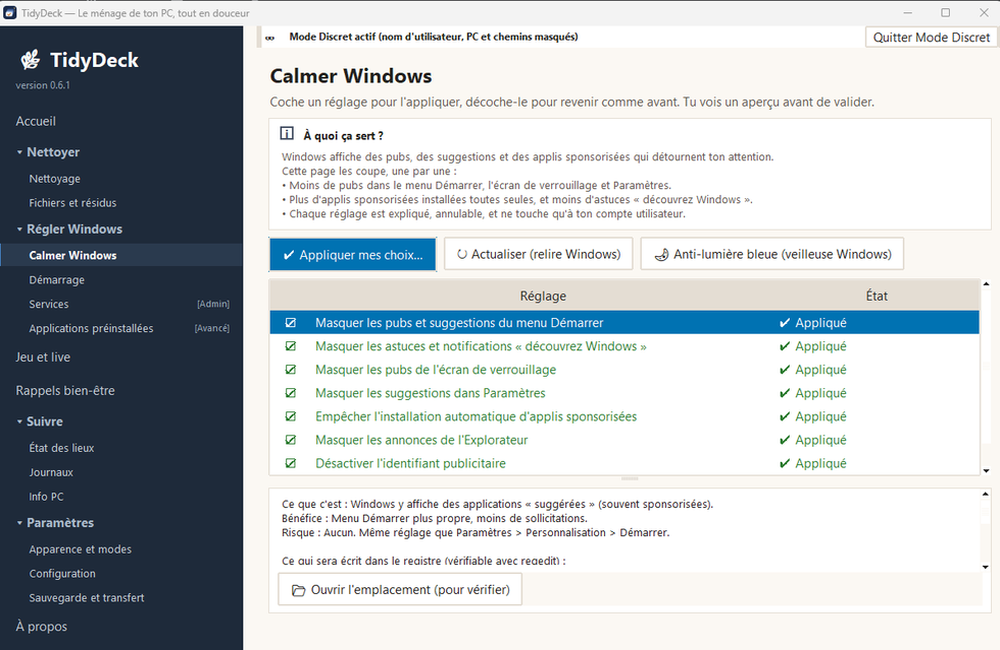
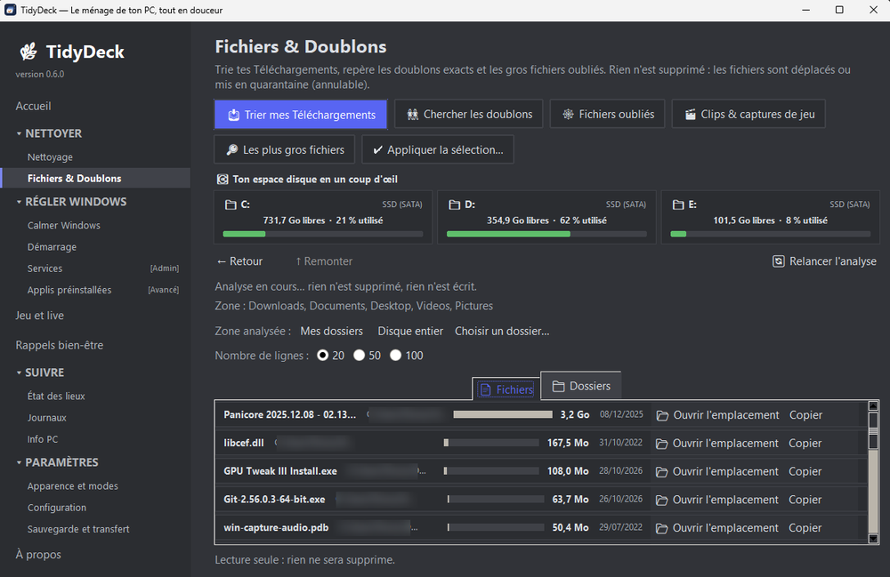
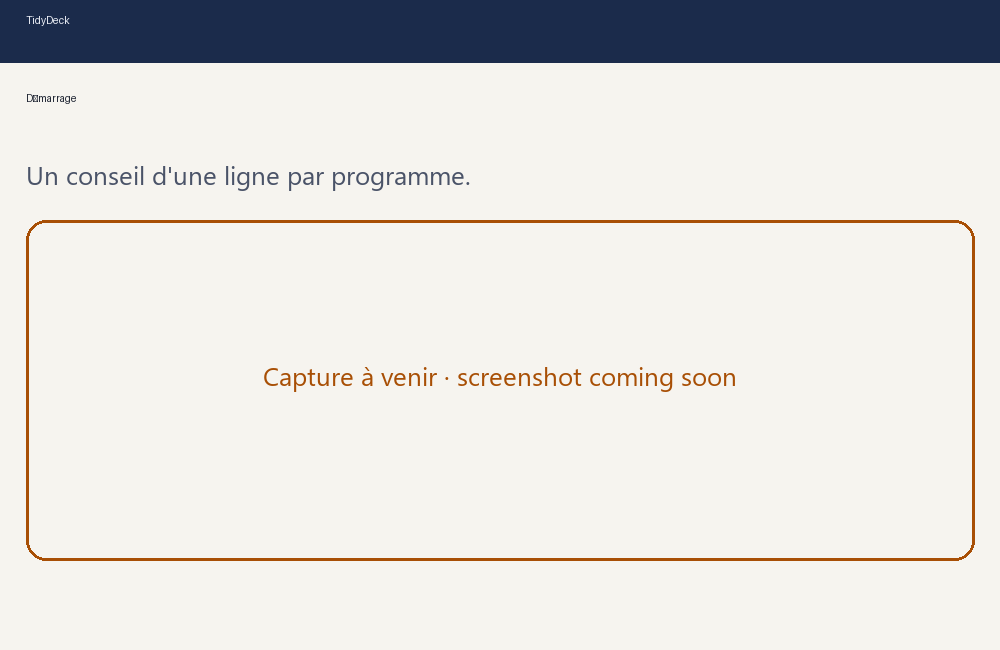
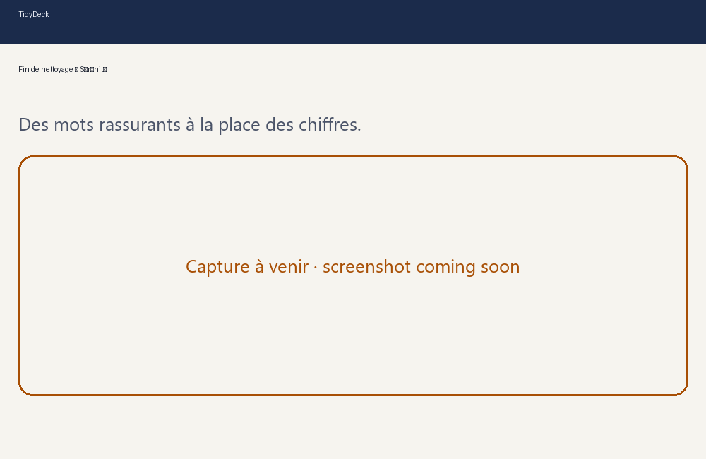

Nettoie, range et calme ton PC, sans rien casser et sans te juger.
Un nettoyeur de PC qui te montre tout avant d'agir.
- Gratuit et libre (GPL-3.0)
- Sans compte, sans collecte
- Windows 10 et 11
- Rien à installer

Pourquoi j’ai fait TDAH, sans savoir que ça s’appelait TDAH. Ça m’a gêné absolument toute ma vie : à l’école, dans les relations sociales, au travail.
J’ai eu l’idée de ce logiciel peu après mon diagnostic, pour les gamers, les TDAH et les daltoniens. Il m’aide à jouer sans avoir peur de rater mon rendez-vous, sans être frustré toute la journée en stand-by.
Lire mon histoire en entierRéduire
Je savais que quelque chose n’allait pas, sans savoir que ça s’appelait TDAH.
Ça m’a gêné absolument toute ma vie : à l’école, dans les relations sociales, au travail. Un simple bruit de feuilles, un toussotement, quelqu’un qui reniflait en cours…
Il m’était impossible de me concentrer, ne serait-ce qu’un minimum. Je n’oublie pas le temps qu’il fallait pour que je me mette à faire de simples devoirs.
J’étais frustré chaque jour de voir les élèves de ma classe écrire, se concentrer, aller chercher les réponses dans leur tête.
Des centaines et des centaines de milliers de pensées chaque jour, sans pouvoir les condenser, les stopper, les réduire.
Aujourd’hui, je suis diagnostiqué, après des années de combat contre moi-même.
J’ai eu l’idée de ce logiciel peu après mon diagnostic, pour les gamers, les TDAH et les daltoniens (avec des rappels bien-être). Il m’aide à jouer sans avoir peur de rater mon rendez-vous, grâce à des rappels qui me préviennent, sans être frustré toute la journée en stand-by jusqu’à ce que le rendez-vous soit passé.
Trois promesses
Tu vois avant d'agir
Chaque liste est montrée, avec les chemins réels, avant toute confirmation.
Tout s'annule pendant 7 jours
Ce qui est rangé est mis de côté, restaurable en un clic depuis « Journaux ».
Rien ne sort de ton PC
Aucun compte, aucune télémétrie. Le seul accès réseau est le bouton « Mises à jour », si tu cliques.
Ce qu'il fait
Nettoyer
Fichiers temporaires et caches. Tu vois la liste et la place gagnée avant de valider.
Ce qui est nettoyé va en quarantaine pendant 7 jours. Tu peux tout récupérer.

Calmer Windows
Moins de suggestions, d'applications recommandées et de messages « Découvrez Windows ».
Seuls tes réglages sont touchés, et chacun s'annule en le décochant.

Les plus gros fichiers
La liste des plus gros fichiers et dossiers, en lecture seule.
TidyDeck te montre. Il ne supprime rien pendant qu'il regarde.

Démarrage
Un conseil sur chaque programme lancé avec Windows : lequel désactiver sans risque, et pourquoi.
Rien ne change sans ton accord, et chaque changement s'annule.

Rappels bien-être
Des notifications douces pour faire une pause, s'hydrater ou lâcher l'écran, pensées pour ne pas couper brutalement ta concentration.
Entièrement paramétrables ou désactivables selon tes envies du moment, avec en prime un minuteur de rendez-vous conçu pour les profils TDAH.
Et aussi : un journal de tout ce qui a été fait, et un mode « Jeu et live » — les rappels attendent la fin de ta partie.
Ce qu'il ne fait pas
- Pas de « nettoyeur de registre », pas de promesses miracles.
- Pas de compte, pas de publicité, pas de télémétrie.
- Pas de service, de tâche planifiée ni de pilote installés.
- Aucune donnée envoyée. Le seul accès au réseau est le bouton « Mises à jour », et seulement si tu cliques.
Une seule chose est définitive : vider la Corbeille. C'est ce qu'on lui demande, et TidyDeck te le rappelle à chaque fois.
Quatre modes
Tu choisis comment TidyDeck te parle et ce qu'il te montre. Tu peux en combiner plusieurs.
- Sérénité
- Six entrées visibles seulement, des phrases courtes, rien qui change sans ton accord. Le reste est replié sous « Plus ».
- Avancé
- Toutes les pages et plus d'options : zone à analyser, nombre de lignes, copie du chemin complet.
- Daltonien
- Un symbole, un mot et une différence de luminosité pour chaque état. Jamais la couleur seule.
- Discret
- Masque à l'écran ton nom d'utilisateur, le nom du PC et les chemins personnels. Pratique en live.

Télécharger
Version 0.6.1 pour Windows 10 et 11, construite le 7 novembre 2026. Aucun droit administrateur au démarrage.
1. Récupère le fichier
Décompresse le dossier TidyDeck où tu veux (par exemple C:\TidyDeck) et double-clique sur TidyDeck.exe. Pour le retirer : supprime le dossier.
2. Vérifie que le fichier est intact
TidyDeck-0.6.1-win64.zip (12 032 934 octets). Empreinte SHA-256 attendue :
d53bd12accc0f8432fcfb9b099a5c8c1d0f1518db9a80fd22d402f67a56d41c6Sur ton PC, dans une invite de commandes :
certutil -hashfile "Downloads\TidyDeck-0.6.1-win64.zip" SHA256Si le résultat est différent, n’ouvre pas le fichier.
Archive du code source : TidyDeck-0.6.1.zip (470 144 octets), empreinte attendue 422ae870fe75fa116c04827a73c149405e31c7bef5cf6f252e8b8205714669b8.
3. Regarde l'analyse antivirus
VirusTotal, analyse du 7 novembre 2026 : 0 moteur sur 44 pour le win64 (rapport) et 0 moteur sur 64 pour l'archive source (rapport). Détails sur l'analyse antivirus.
Un score est une photo à un instant donné, pas une garantie. C'est pour cela que le code est ouvert.
Un avertissement de Windows ?
TidyDeck n'est pas encore signé numériquement. Windows (SmartScreen) peut afficher « Windows a protégé votre ordinateur ». Si tu as vérifié l'empreinte, choisis « Informations complémentaires », puis « Exécuter quand même ». Détails dans la FAQ.
Nouveautés
0.6.1 — publiée le 7 novembre 2026
- Disponible en anglais, en entier.
- Mises à jour plus claires : un bouton vérifie la version publiée et t'ouvre la page de téléchargement.
- Tu choisis où ça se réduit : à côté de l'horloge, si tu veux.
- Des conseils sur chaque programme de démarrage, pour savoir lequel désactiver sans risque.
- Mode Sérénité : une fin de nettoyage avec des mots rassurants à la place des chiffres.
- Plus de prudence avec les jeux : les dossiers pouvant contenir des sauvegardes ne sont jamais proposés.
- Plus rapide à l'ouverture sur mon PC, et de nombreux petits correctifs.
Toutes les versions et archives : la page des versions sur GitHub.
Soutenir le projet
TidyDeck est gratuit et le restera toujours. Les dons sont appréciés, mais jamais obligatoires.